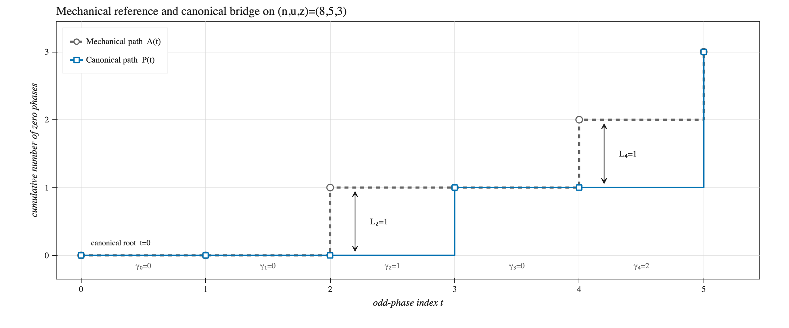
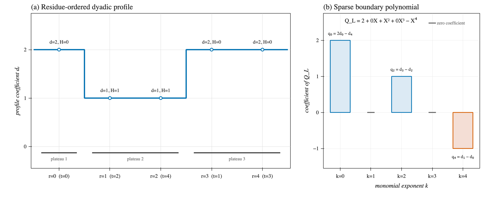

Unpublished manuscript · Number theory
Polynomial Coordinates for Collatz Cycles
An exact coordinate system turns the geometry of a parity pattern into a sparse polynomial boundary—and makes integrality impose a quantitative complexity obstruction.
Unpublished · August 2026 · 52 pages · Seeking arXiv endorsement
The manuscript
Abstract
This paper studies how integrality constrains the shape of parity patterns for hypothetical cycles of the shortcut Collatz map. A binary parity word of length n with u odd symbols determines a rational periodic orbit, but the standard numerator formula does not reveal how the arrangement of those symbols affects integrality. In the coprime cycle-relevant range, the odd phases admit a lossless residue order. Each cyclic parity class then has a unique rotation whose cumulative zero path lies below the balanced mechanical path. Their nonnegative vertical displacement is the bridge L.
Writing the bridge heights in residue order and taking a discrete boundary produces a sparse polynomial QL. The rational orbit is integral exactly when this boundary is divisible by 2Xn−u−3 in ℤ[X]/(Xu−2). Integrality therefore becomes a tension between a sparse geometric boundary and a dense arithmetic quotient. Competing 3-adic and dyadic estimates yield the plateau-complexity bound above. The same coordinates recover the mechanical-word exclusion and support a separate exclusion of every singleton bridge candidate in the positive-denominator range.
The construction
From parity word to sparse boundary
Four exact transformations separate cyclic ambiguity, geometric displacement, arithmetic position, and boundary complexity.
-
01
Canonical bridge
Root the cyclic word uniquely below its balanced mechanical reference and record the vertical displacement L.
-
02
Residue order
Use rt=(n−u)t mod u to place every odd phase on the arithmetic exponent scale.
-
03
Dyadic profile
Convert reordered bridge heights into positive powers of two; constant height intervals become literal plateaux.
-
04
Sparse boundary
Take the reduced discrete boundary in ℤ[X]/(Xu−2). Its support size is exactly the plateau count.
Running example
The row (8, 5, 3)
The mechanical reference word is 11011010. The
canonically rooted comparison word 11101100 has bridge
L=(0,0,1,0,1,0).


Exact companion
Reproduce the coordinates
A small standard-library Python package validates an already rooted legal bridge and computes every displayed coordinate in the running example. It does not search for cycles or silently canonicalize an arbitrary word.
Run
git clone https://github.com/aaronksolomon/collatz-boundary.git
cd collatz-boundary
python -m pip install .
collatz-boundaryPython 3.12+ · standard library only · GPL-3.0-or-later
Verify
w=11101100
N(w)=251
integrally realizable=False
r(t)=(0, 3, 1, 4, 2)
H=(0, 1, 1, 0, 0)
d=(2, 1, 1, 2, 2)
coeff(Q_L)=(2, 0, 1, 0, -1)
K(L)=3Draft status
Referencing this manuscript
Aaron Kyle Solomon. “Polynomial Coordinates for Collatz Cycles.” Unpublished manuscript, 2026.
This manuscript has no arXiv or journal identifier. It is being
shared to invite scholarly review and obtain an arXiv endorsement.
Mathematical feedback is welcome; eligible arXiv endorsers who
judge the work appropriate are invited to contact the author.
Repository metadata is provided in
CITATION.cff.